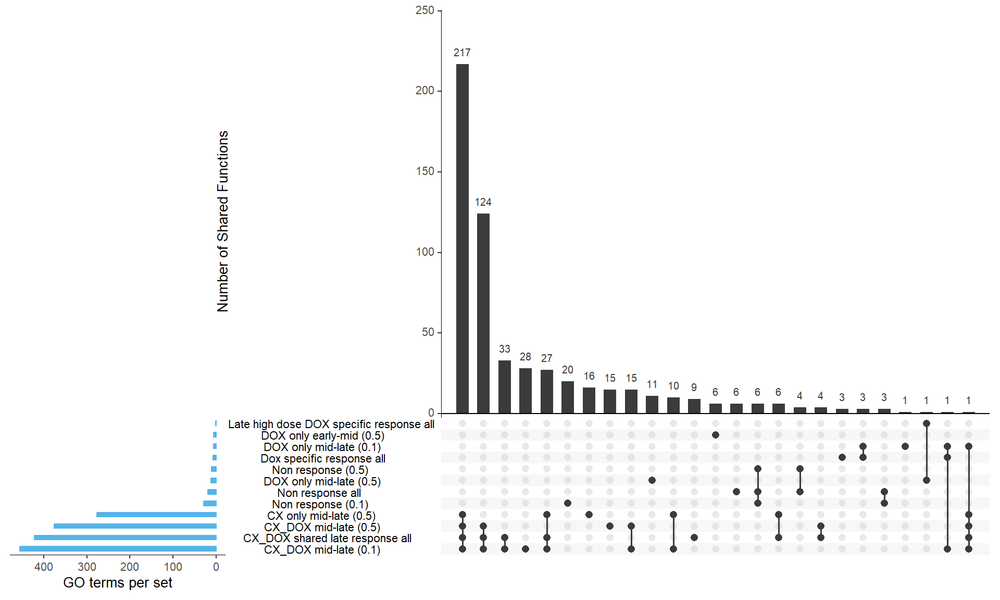
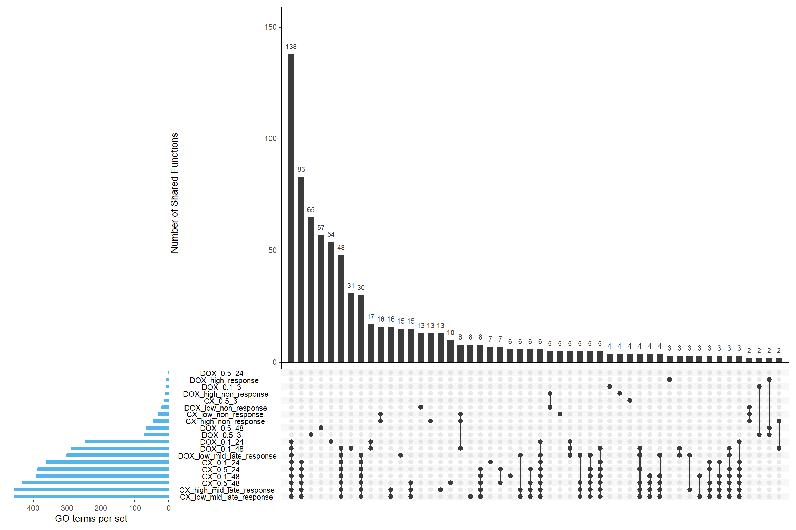

Last updated: 2025-03-04
Checks: 6 1
Knit directory: CX5461_Project/
This reproducible R Markdown analysis was created with workflowr (version 1.7.1). The Checks tab describes the reproducibility checks that were applied when the results were created. The Past versions tab lists the development history.
The R Markdown file has unstaged changes. To know which version of
the R Markdown file created these results, you’ll want to first commit
it to the Git repo. If you’re still working on the analysis, you can
ignore this warning. When you’re finished, you can run
wflow_publish to commit the R Markdown file and build the
HTML.
Great job! The global environment was empty. Objects defined in the global environment can affect the analysis in your R Markdown file in unknown ways. For reproduciblity it’s best to always run the code in an empty environment.
The command set.seed(20250129) was run prior to running
the code in the R Markdown file. Setting a seed ensures that any results
that rely on randomness, e.g. subsampling or permutations, are
reproducible.
Great job! Recording the operating system, R version, and package versions is critical for reproducibility.
Nice! There were no cached chunks for this analysis, so you can be confident that you successfully produced the results during this run.
Great job! Using relative paths to the files within your workflowr project makes it easier to run your code on other machines.
Great! You are using Git for version control. Tracking code development and connecting the code version to the results is critical for reproducibility.
The results in this page were generated with repository version 701caae. See the Past versions tab to see a history of the changes made to the R Markdown and HTML files.
Note that you need to be careful to ensure that all relevant files for
the analysis have been committed to Git prior to generating the results
(you can use wflow_publish or
wflow_git_commit). workflowr only checks the R Markdown
file, but you know if there are other scripts or data files that it
depends on. Below is the status of the Git repository when the results
were generated:
Ignored files:
Ignored: .RData
Ignored: .Rhistory
Ignored: .Rproj.user/
Ignored: analysis/figure/
Untracked files:
Untracked: data/GO_time/
Unstaged changes:
Modified: Enriched_BP_Terms.csv
Modified: Enriched_CC_Terms.csv
Modified: Enriched_MF_Terms.csv
Modified: analysis/Corrmotif_overlap.Rmd
Note that any generated files, e.g. HTML, png, CSS, etc., are not included in this status report because it is ok for generated content to have uncommitted changes.
These are the previous versions of the repository in which changes were
made to the R Markdown (analysis/Corrmotif_overlap.Rmd) and
HTML (docs/Corrmotif_overlap.html) files. If you’ve
configured a remote Git repository (see ?wflow_git_remote),
click on the hyperlinks in the table below to view the files as they
were in that past version.
| File | Version | Author | Date | Message |
|---|---|---|---|---|
| Rmd | 701caae | sayanpaul01 | 2025-03-04 | Commit |
| html | 701caae | sayanpaul01 | 2025-03-04 | Commit |
| Rmd | 56e1527 | sayanpaul01 | 2025-03-04 | Commit |
| html | 56e1527 | sayanpaul01 | 2025-03-04 | Commit |
| Rmd | 63ae929 | sayanpaul01 | 2025-03-04 | Commit |
| html | 63ae929 | sayanpaul01 | 2025-03-04 | Commit |
library(UpSetR)
library(dplyr)
library(tools)
library(GO.db)
# Set the folder path
folder_path <- "data/all_GO"
# Get a list of all CSV files in the folder
csv_files <- list.files(folder_path, pattern = "\\.csv$", full.names = TRUE)
# Loop through each file and assign it as a variable in the global environment
for (file in csv_files) {
# Generate a valid R variable name from the file name (remove extension and replace spaces)
file_name <- tools::file_path_sans_ext(basename(file))
file_name <- gsub(" ", "_", file_name) # Replace spaces with underscores
file_name <- make.names(file_name) # Ensure the name is valid in R
# Assign the CSV file as a variable in the environment
assign(file_name, read.csv(file, stringsAsFactors = FALSE))
}
# Define datasets (lists of Entrez Gene IDs)
sets <- list(
"Non response all" = prob_all_1$ID,
"CX_DOX shared late response all" = prob_all_2$ID,
"Dox specific response all" = prob_all_3$ID,
"Late high dose DOX specific response all" = prob_all_4$ID,
"Non response (0.1)" = prob_1_0.1$ID,
"DOX only mid-late (0.1)" = prob_2_0.1$ID,
"CX_DOX mid-late (0.1)" = prob_3_0.1$ID,
"Non response (0.5)" = prob_1_0.5$ID,
"DOX only early-mid (0.5)" = prob_2_0.5$ID,
"DOX only mid-late (0.5)" = prob_3_0.5$ID,
"CX only mid-late (0.5)" = prob_4_0.5$ID,
"CX_DOX mid-late (0.5)" = prob_5_0.5$ID
)
# Create a binary matrix for UpSet plot
all_genes <- unique(unlist(sets)) # Get all unique Entrez Gene IDs
binary_matrix <- data.frame(Gene_ID = all_genes) # Initialize DataFrame
# Convert gene lists into a presence/absence matrix (1 = present, 0 = absent)
for (set_name in names(sets)) {
binary_matrix[[set_name]] <- as.integer(all_genes %in% sets[[set_name]])
}
# Remove Gene_ID column as UpSetR only needs the binary matrix
binary_matrix <- binary_matrix[, -1]
upset(binary_matrix,
sets = names(sets),
order.by = "freq",
sets.bar.color = "#56B4E9", # Blue bars for set sizes
mainbar.y.label = "Number of Shared Functions",
sets.x.label = "GO terms per set",
text.scale = 1.2,
nintersects = 30)
| Version | Author | Date |
|---|---|---|
| 63ae929 | sayanpaul01 | 2025-03-04 |
# Create a list to store unique GO terms per category
unique_go_terms <- list()
# Loop through each set to find unique GO terms
for (set_name in names(sets)) {
# Get the GO terms for the current set
current_go_terms <- sets[[set_name]]
# Find GO terms that appear **only** in this set and not in others
unique_terms <- current_go_terms[!(current_go_terms %in% unlist(sets[names(sets) != set_name]))]
# Store in the list if there are any unique terms
if (length(unique_terms) > 0) {
unique_go_terms[[set_name]] <- unique_terms
}
}
# Display unique GO terms for each category
unique_go_terms$`Non response all`
[1] "GO:0071339" "GO:1990204" "GO:0101031" "GO:0070469" "GO:0070971"
[6] "GO:0044665"
$`CX_DOX shared late response all`
[1] "GO:0009132" "GO:0097421" "GO:0140719" "GO:0140299" "GO:0035064"
[6] "GO:0140034" "GO:1990498" "GO:0005682" "GO:0030532"
$`Dox specific response all`
[1] "GO:0045177" "GO:0016323" "GO:0009925"
$`Non response (0.1)`
[1] "GO:0034470" "GO:0042254" "GO:0022613" "GO:0140053" "GO:0006413"
[6] "GO:0006364" "GO:0032543" "GO:0048193" "GO:0033108" "GO:0016072"
[11] "GO:0008135" "GO:0090079" "GO:0030684" "GO:0005759" "GO:0098800"
[16] "GO:0098803" "GO:0010494" "GO:0000313" "GO:0005761" "GO:0035770"
$`DOX only mid-late (0.1)`
[1] "GO:0009162" "GO:0009130" "GO:0006999" "GO:0006221" "GO:0007096"
[6] "GO:0045859" "GO:0006978" "GO:0009129" "GO:0046785" "GO:0002562"
[11] "GO:0016444" "GO:0042772" "GO:0010458" "GO:0071900" "GO:0051292"
[16] "GO:0006289" "GO:0008584" "GO:0008406" "GO:0046546" "GO:0045739"
[21] "GO:0045137" "GO:0043549" "GO:0009124" "GO:0048144" "GO:0008301"
[26] "GO:0017056" "GO:0000803" "GO:0043240"
$`CX_DOX mid-late (0.1)`
[1] "GO:0005402"
$`DOX only early-mid (0.5)`
[1] "GO:0140297" "GO:0061629" "GO:0090575" "GO:0005667" "GO:0097550"
[6] "GO:0005669"
$`DOX only mid-late (0.5)`
[1] "GO:0007186" "GO:0048738" "GO:0014706" "GO:0099084" "GO:0099173"
[6] "GO:0045598" "GO:0046486" "GO:0003013" "GO:0045444" "GO:0046620"
[11] "GO:0016236"
$`CX only mid-late (0.5)`
[1] "GO:0048599" "GO:0090305" "GO:0009994" "GO:2000243" "GO:0018105"
[6] "GO:0018209" "GO:0035561" "GO:0090657" "GO:0048477" "GO:0071732"
[11] "GO:0006264" "GO:0000722" "GO:0071731" "GO:1902170" "GO:0004518"
[16] "GO:0019205"
$`CX_DOX mid-late (0.5)`
[1] "GO:0048146" "GO:0030865" "GO:0051493" "GO:0051782" "GO:0090399"
[6] "GO:2000279" "GO:0030010" "GO:1901875" "GO:0032147" "GO:0031398"
[11] "GO:0007163" "GO:0051972" "GO:0000235" "GO:0005818" "GO:0101019"map_go_terms_local <- function(go_ids) {
go_names <- unlist(mget(go_ids, GOTERM, ifnotfound = NA)) # Retrieve function names
go_descriptions <- sapply(go_names, function(x) if (!is.na(x)) Term(x) else NA)
# Create a dataframe
go_mapping <- data.frame(GO_ID = go_ids, Function = go_descriptions, stringsAsFactors = FALSE)
# Remove NAs (unrecognized GO IDs)
go_mapping <- go_mapping[!is.na(go_mapping$Function), ]
return(go_mapping)
}
mapped_unique_go_terms <- list()
for (set_name in names(unique_go_terms)) {
if (length(unique_go_terms[[set_name]]) > 0) {
go_data <- map_go_terms_local(unique_go_terms[[set_name]])
mapped_unique_go_terms[[set_name]] <- go_data
}
}Warning in is.na(x): is.na() applied to non-(list or vector) of type 'S4'
Warning in is.na(x): is.na() applied to non-(list or vector) of type 'S4'
Warning in is.na(x): is.na() applied to non-(list or vector) of type 'S4'
Warning in is.na(x): is.na() applied to non-(list or vector) of type 'S4'
Warning in is.na(x): is.na() applied to non-(list or vector) of type 'S4'
Warning in is.na(x): is.na() applied to non-(list or vector) of type 'S4'
Warning in is.na(x): is.na() applied to non-(list or vector) of type 'S4'
Warning in is.na(x): is.na() applied to non-(list or vector) of type 'S4'
Warning in is.na(x): is.na() applied to non-(list or vector) of type 'S4'
Warning in is.na(x): is.na() applied to non-(list or vector) of type 'S4'
Warning in is.na(x): is.na() applied to non-(list or vector) of type 'S4'
Warning in is.na(x): is.na() applied to non-(list or vector) of type 'S4'
Warning in is.na(x): is.na() applied to non-(list or vector) of type 'S4'
Warning in is.na(x): is.na() applied to non-(list or vector) of type 'S4'
Warning in is.na(x): is.na() applied to non-(list or vector) of type 'S4'
Warning in is.na(x): is.na() applied to non-(list or vector) of type 'S4'
Warning in is.na(x): is.na() applied to non-(list or vector) of type 'S4'
Warning in is.na(x): is.na() applied to non-(list or vector) of type 'S4'
Warning in is.na(x): is.na() applied to non-(list or vector) of type 'S4'
Warning in is.na(x): is.na() applied to non-(list or vector) of type 'S4'
Warning in is.na(x): is.na() applied to non-(list or vector) of type 'S4'
Warning in is.na(x): is.na() applied to non-(list or vector) of type 'S4'
Warning in is.na(x): is.na() applied to non-(list or vector) of type 'S4'
Warning in is.na(x): is.na() applied to non-(list or vector) of type 'S4'
Warning in is.na(x): is.na() applied to non-(list or vector) of type 'S4'
Warning in is.na(x): is.na() applied to non-(list or vector) of type 'S4'
Warning in is.na(x): is.na() applied to non-(list or vector) of type 'S4'
Warning in is.na(x): is.na() applied to non-(list or vector) of type 'S4'
Warning in is.na(x): is.na() applied to non-(list or vector) of type 'S4'
Warning in is.na(x): is.na() applied to non-(list or vector) of type 'S4'
Warning in is.na(x): is.na() applied to non-(list or vector) of type 'S4'
Warning in is.na(x): is.na() applied to non-(list or vector) of type 'S4'
Warning in is.na(x): is.na() applied to non-(list or vector) of type 'S4'
Warning in is.na(x): is.na() applied to non-(list or vector) of type 'S4'
Warning in is.na(x): is.na() applied to non-(list or vector) of type 'S4'
Warning in is.na(x): is.na() applied to non-(list or vector) of type 'S4'
Warning in is.na(x): is.na() applied to non-(list or vector) of type 'S4'
Warning in is.na(x): is.na() applied to non-(list or vector) of type 'S4'
Warning in is.na(x): is.na() applied to non-(list or vector) of type 'S4'
Warning in is.na(x): is.na() applied to non-(list or vector) of type 'S4'
Warning in is.na(x): is.na() applied to non-(list or vector) of type 'S4'
Warning in is.na(x): is.na() applied to non-(list or vector) of type 'S4'
Warning in is.na(x): is.na() applied to non-(list or vector) of type 'S4'
Warning in is.na(x): is.na() applied to non-(list or vector) of type 'S4'
Warning in is.na(x): is.na() applied to non-(list or vector) of type 'S4'
Warning in is.na(x): is.na() applied to non-(list or vector) of type 'S4'
Warning in is.na(x): is.na() applied to non-(list or vector) of type 'S4'
Warning in is.na(x): is.na() applied to non-(list or vector) of type 'S4'
Warning in is.na(x): is.na() applied to non-(list or vector) of type 'S4'
Warning in is.na(x): is.na() applied to non-(list or vector) of type 'S4'
Warning in is.na(x): is.na() applied to non-(list or vector) of type 'S4'
Warning in is.na(x): is.na() applied to non-(list or vector) of type 'S4'
Warning in is.na(x): is.na() applied to non-(list or vector) of type 'S4'
Warning in is.na(x): is.na() applied to non-(list or vector) of type 'S4'
Warning in is.na(x): is.na() applied to non-(list or vector) of type 'S4'
Warning in is.na(x): is.na() applied to non-(list or vector) of type 'S4'
Warning in is.na(x): is.na() applied to non-(list or vector) of type 'S4'
Warning in is.na(x): is.na() applied to non-(list or vector) of type 'S4'
Warning in is.na(x): is.na() applied to non-(list or vector) of type 'S4'
Warning in is.na(x): is.na() applied to non-(list or vector) of type 'S4'
Warning in is.na(x): is.na() applied to non-(list or vector) of type 'S4'
Warning in is.na(x): is.na() applied to non-(list or vector) of type 'S4'
Warning in is.na(x): is.na() applied to non-(list or vector) of type 'S4'
Warning in is.na(x): is.na() applied to non-(list or vector) of type 'S4'
Warning in is.na(x): is.na() applied to non-(list or vector) of type 'S4'
Warning in is.na(x): is.na() applied to non-(list or vector) of type 'S4'
Warning in is.na(x): is.na() applied to non-(list or vector) of type 'S4'
Warning in is.na(x): is.na() applied to non-(list or vector) of type 'S4'
Warning in is.na(x): is.na() applied to non-(list or vector) of type 'S4'
Warning in is.na(x): is.na() applied to non-(list or vector) of type 'S4'
Warning in is.na(x): is.na() applied to non-(list or vector) of type 'S4'
Warning in is.na(x): is.na() applied to non-(list or vector) of type 'S4'
Warning in is.na(x): is.na() applied to non-(list or vector) of type 'S4'
Warning in is.na(x): is.na() applied to non-(list or vector) of type 'S4'
Warning in is.na(x): is.na() applied to non-(list or vector) of type 'S4'
Warning in is.na(x): is.na() applied to non-(list or vector) of type 'S4'
Warning in is.na(x): is.na() applied to non-(list or vector) of type 'S4'
Warning in is.na(x): is.na() applied to non-(list or vector) of type 'S4'
Warning in is.na(x): is.na() applied to non-(list or vector) of type 'S4'
Warning in is.na(x): is.na() applied to non-(list or vector) of type 'S4'
Warning in is.na(x): is.na() applied to non-(list or vector) of type 'S4'
Warning in is.na(x): is.na() applied to non-(list or vector) of type 'S4'
Warning in is.na(x): is.na() applied to non-(list or vector) of type 'S4'
Warning in is.na(x): is.na() applied to non-(list or vector) of type 'S4'
Warning in is.na(x): is.na() applied to non-(list or vector) of type 'S4'
Warning in is.na(x): is.na() applied to non-(list or vector) of type 'S4'
Warning in is.na(x): is.na() applied to non-(list or vector) of type 'S4'
Warning in is.na(x): is.na() applied to non-(list or vector) of type 'S4'
Warning in is.na(x): is.na() applied to non-(list or vector) of type 'S4'
Warning in is.na(x): is.na() applied to non-(list or vector) of type 'S4'
Warning in is.na(x): is.na() applied to non-(list or vector) of type 'S4'
Warning in is.na(x): is.na() applied to non-(list or vector) of type 'S4'
Warning in is.na(x): is.na() applied to non-(list or vector) of type 'S4'
Warning in is.na(x): is.na() applied to non-(list or vector) of type 'S4'
Warning in is.na(x): is.na() applied to non-(list or vector) of type 'S4'
Warning in is.na(x): is.na() applied to non-(list or vector) of type 'S4'
Warning in is.na(x): is.na() applied to non-(list or vector) of type 'S4'
Warning in is.na(x): is.na() applied to non-(list or vector) of type 'S4'
Warning in is.na(x): is.na() applied to non-(list or vector) of type 'S4'
Warning in is.na(x): is.na() applied to non-(list or vector) of type 'S4'
Warning in is.na(x): is.na() applied to non-(list or vector) of type 'S4'
Warning in is.na(x): is.na() applied to non-(list or vector) of type 'S4'
Warning in is.na(x): is.na() applied to non-(list or vector) of type 'S4'
Warning in is.na(x): is.na() applied to non-(list or vector) of type 'S4'
Warning in is.na(x): is.na() applied to non-(list or vector) of type 'S4'
Warning in is.na(x): is.na() applied to non-(list or vector) of type 'S4'
Warning in is.na(x): is.na() applied to non-(list or vector) of type 'S4'
Warning in is.na(x): is.na() applied to non-(list or vector) of type 'S4'
Warning in is.na(x): is.na() applied to non-(list or vector) of type 'S4'
Warning in is.na(x): is.na() applied to non-(list or vector) of type 'S4'
Warning in is.na(x): is.na() applied to non-(list or vector) of type 'S4'
Warning in is.na(x): is.na() applied to non-(list or vector) of type 'S4'
Warning in is.na(x): is.na() applied to non-(list or vector) of type 'S4'
Warning in is.na(x): is.na() applied to non-(list or vector) of type 'S4'
Warning in is.na(x): is.na() applied to non-(list or vector) of type 'S4'# Display mapped GO terms
mapped_unique_go_terms$`Non response all`
GO_ID Function
GO:0071339 GO:0071339 MLL1 complex
GO:1990204 GO:1990204 oxidoreductase complex
GO:0101031 GO:0101031 protein folding chaperone complex
GO:0070469 GO:0070469 respirasome
GO:0070971 GO:0070971 endoplasmic reticulum exit site
GO:0044665 GO:0044665 MLL1/2 complex
$`CX_DOX shared late response all`
GO_ID Function
GO:0009132 GO:0009132 nucleoside diphosphate metabolic process
GO:0097421 GO:0097421 liver regeneration
GO:0140719 GO:0140719 constitutive heterochromatin formation
GO:0140299 GO:0140299 small molecule sensor activity
GO:0035064 GO:0035064 methylated histone binding
GO:0140034 GO:0140034 methylation-dependent protein binding
GO:1990498 GO:1990498 mitotic spindle microtubule
GO:0005682 GO:0005682 U5 snRNP
GO:0030532 GO:0030532 small nuclear ribonucleoprotein complex
$`Dox specific response all`
GO_ID Function
GO:0045177 GO:0045177 apical part of cell
GO:0016323 GO:0016323 basolateral plasma membrane
GO:0009925 GO:0009925 basal plasma membrane
$`Non response (0.1)`
GO_ID Function
GO:0034470 GO:0034470 ncRNA processing
GO:0042254 GO:0042254 ribosome biogenesis
GO:0022613 GO:0022613 ribonucleoprotein complex biogenesis
GO:0140053 GO:0140053 mitochondrial gene expression
GO:0006413 GO:0006413 translational initiation
GO:0006364 GO:0006364 rRNA processing
GO:0032543 GO:0032543 mitochondrial translation
GO:0048193 GO:0048193 Golgi vesicle transport
GO:0033108 GO:0033108 mitochondrial respiratory chain complex assembly
GO:0016072 GO:0016072 rRNA metabolic process
GO:0008135 GO:0008135 translation factor activity, RNA binding
GO:0090079 GO:0090079 translation regulator activity, nucleic acid binding
GO:0030684 GO:0030684 preribosome
GO:0005759 GO:0005759 mitochondrial matrix
GO:0098800 GO:0098800 inner mitochondrial membrane protein complex
GO:0098803 GO:0098803 respiratory chain complex
GO:0010494 GO:0010494 cytoplasmic stress granule
GO:0000313 GO:0000313 organellar ribosome
GO:0005761 GO:0005761 mitochondrial ribosome
GO:0035770 GO:0035770 ribonucleoprotein granule
$`DOX only mid-late (0.1)`
GO_ID
GO:0009162 GO:0009162
GO:0009130 GO:0009130
GO:0006999 GO:0006999
GO:0006221 GO:0006221
GO:0007096 GO:0007096
GO:0045859 GO:0045859
GO:0006978 GO:0006978
GO:0009129 GO:0009129
GO:0046785 GO:0046785
GO:0002562 GO:0002562
GO:0016444 GO:0016444
GO:0042772 GO:0042772
GO:0010458 GO:0010458
GO:0071900 GO:0071900
GO:0051292 GO:0051292
GO:0006289 GO:0006289
GO:0008584 GO:0008584
GO:0008406 GO:0008406
GO:0046546 GO:0046546
GO:0045739 GO:0045739
GO:0045137 GO:0045137
GO:0043549 GO:0043549
GO:0009124 GO:0009124
GO:0048144 GO:0048144
GO:0008301 GO:0008301
GO:0017056 GO:0017056
GO:0000803 GO:0000803
GO:0043240 GO:0043240
Function
GO:0009162 deoxyribonucleoside monophosphate metabolic process
GO:0009130 pyrimidine nucleoside monophosphate biosynthetic process
GO:0006999 nuclear pore organization
GO:0006221 pyrimidine nucleotide biosynthetic process
GO:0007096 regulation of exit from mitosis
GO:0045859 regulation of protein kinase activity
GO:0006978 DNA damage response, signal transduction by p53 class mediator resulting in transcription of p21 class mediator
GO:0009129 pyrimidine nucleoside monophosphate metabolic process
GO:0046785 microtubule polymerization
GO:0002562 somatic diversification of immune receptors via germline recombination within a single locus
GO:0016444 somatic cell DNA recombination
GO:0042772 DNA damage response, signal transduction resulting in transcription
GO:0010458 exit from mitosis
GO:0071900 regulation of protein serine/threonine kinase activity
GO:0051292 nuclear pore complex assembly
GO:0006289 nucleotide-excision repair
GO:0008584 male gonad development
GO:0008406 gonad development
GO:0046546 development of primary male sexual characteristics
GO:0045739 positive regulation of DNA repair
GO:0045137 development of primary sexual characteristics
GO:0043549 regulation of kinase activity
GO:0009124 nucleoside monophosphate biosynthetic process
GO:0048144 fibroblast proliferation
GO:0008301 DNA binding, bending
GO:0017056 structural constituent of nuclear pore
GO:0000803 sex chromosome
GO:0043240 Fanconi anaemia nuclear complex
$`CX_DOX mid-late (0.1)`
GO_ID Function
GO:0005402 GO:0005402 carbohydrate:monoatomic cation symporter activity
$`DOX only early-mid (0.5)`
GO_ID
GO:0140297 GO:0140297
GO:0061629 GO:0061629
GO:0090575 GO:0090575
GO:0005667 GO:0005667
GO:0097550 GO:0097550
GO:0005669 GO:0005669
Function
GO:0140297 DNA-binding transcription factor binding
GO:0061629 RNA polymerase II-specific DNA-binding transcription factor binding
GO:0090575 RNA polymerase II transcription regulator complex
GO:0005667 transcription regulator complex
GO:0097550 transcription preinitiation complex
GO:0005669 transcription factor TFIID complex
$`DOX only mid-late (0.5)`
GO_ID Function
GO:0007186 GO:0007186 G protein-coupled receptor signaling pathway
GO:0048738 GO:0048738 cardiac muscle tissue development
GO:0014706 GO:0014706 striated muscle tissue development
GO:0099084 GO:0099084 postsynaptic specialization organization
GO:0099173 GO:0099173 postsynapse organization
GO:0045598 GO:0045598 regulation of fat cell differentiation
GO:0046486 GO:0046486 glycerolipid metabolic process
GO:0003013 GO:0003013 circulatory system process
GO:0045444 GO:0045444 fat cell differentiation
GO:0046620 GO:0046620 regulation of organ growth
GO:0016236 GO:0016236 macroautophagy
$`CX only mid-late (0.5)`
GO_ID Function
GO:0048599 GO:0048599 oocyte development
GO:0090305 GO:0090305 nucleic acid phosphodiester bond hydrolysis
GO:0009994 GO:0009994 oocyte differentiation
GO:2000243 GO:2000243 positive regulation of reproductive process
GO:0018105 GO:0018105 peptidyl-serine phosphorylation
GO:0018209 GO:0018209 peptidyl-serine modification
GO:0035561 GO:0035561 regulation of chromatin binding
GO:0090657 GO:0090657 telomeric loop disassembly
GO:0048477 GO:0048477 oogenesis
GO:0071732 GO:0071732 cellular response to nitric oxide
GO:0006264 GO:0006264 mitochondrial DNA replication
GO:0000722 GO:0000722 telomere maintenance via recombination
GO:0071731 GO:0071731 response to nitric oxide
GO:1902170 GO:1902170 cellular response to reactive nitrogen species
GO:0004518 GO:0004518 nuclease activity
GO:0019205 GO:0019205 nucleobase-containing compound kinase activity
$`CX_DOX mid-late (0.5)`
GO_ID
GO:0048146 GO:0048146
GO:0030865 GO:0030865
GO:0051493 GO:0051493
GO:0051782 GO:0051782
GO:0090399 GO:0090399
GO:2000279 GO:2000279
GO:0030010 GO:0030010
GO:1901875 GO:1901875
GO:0032147 GO:0032147
GO:0031398 GO:0031398
GO:0007163 GO:0007163
GO:0051972 GO:0051972
GO:0000235 GO:0000235
GO:0005818 GO:0005818
GO:0101019 GO:0101019
Function
GO:0048146 positive regulation of fibroblast proliferation
GO:0030865 cortical cytoskeleton organization
GO:0051493 regulation of cytoskeleton organization
GO:0051782 negative regulation of cell division
GO:0090399 replicative senescence
GO:2000279 negative regulation of DNA biosynthetic process
GO:0030010 establishment of cell polarity
GO:1901875 positive regulation of post-translational protein modification
GO:0032147 activation of protein kinase activity
GO:0031398 positive regulation of protein ubiquitination
GO:0007163 establishment or maintenance of cell polarity
GO:0051972 regulation of telomerase activity
GO:0000235 astral microtubule
GO:0005818 aster
GO:0101019 nucleolar exosome (RNase complex)library(UpSetR)
library(dplyr)
library(tools)
library(GO.db)
# Set the folder path
folder_path <- "data/GO_time"
# Get a list of all CSV files in the folder
csv_files <- list.files(folder_path, pattern = "\\.csv$", full.names = TRUE)
# Loop through each file and assign it as a variable in the global environment
for (file in csv_files) {
# Generate a valid R variable name from the file name (remove extension and replace spaces)
file_name <- tools::file_path_sans_ext(basename(file))
file_name <- gsub(" ", "_", file_name) # Replace spaces with underscores
file_name <- make.names(file_name) # Ensure the name is valid in R
# Assign the CSV file as a variable in the environment
assign(file_name, read.csv(file, stringsAsFactors = FALSE))
}
sets <- list(
"CX_0.1_24" = CX_0.1_24_GO$ID,
"CX_0.1_48" = CX_0.1_48_GO$ID,
"CX_0.5_3" = CX_0.5_3_GO$ID,
"CX_0.5_24" = CX_0.5_24_GO$ID,
"CX_0.5_48" = CX_0.5_48_GO$ID,
"DOX_0.1_3" = DOX_0.1_3_GO$ID,
"DOX_0.1_24" = DOX_0.1_24_GO$ID,
"DOX_0.1_48" = DOX_0.1_48_GO$ID,
"DOX_0.5_3" = DOX_0.5_3_GO$ID,
"DOX_0.5_24" = DOX_0.5_24_GO$ID,
"DOX_0.5_48" = DOX_0.5_48_GO$ID,
"CX_low_non_response" = prob_CX_1_0.1_GO$ID,
"CX_low_mid_late_response" = prob_CX_2_0.1_GO$ID,
"CX_high_non_response" = prob_CX_1_0.5_GO$ID,
"CX_high_mid_late_response" = prob_CX_2_0.5_GO$ID,
"DOX_low_non_response" = prob_DOX_1_0.1_GO$ID,
"DOX_low_mid_late_response" = prob_DOX_2_0.1_GO$ID,
"DOX_high_non_response" = prob_DOX_1_0.5_GO$ID,
"DOX_high_response" = prob_DOX_2_0.5_GO$ID
)
# Create a binary matrix for UpSet plot
all_genes <- unique(unlist(sets)) # Get all unique Entrez Gene IDs
binary_matrix <- data.frame(Gene_ID = all_genes) # Initialize DataFrame
# Convert gene lists into a presence/absence matrix (1 = present, 0 = absent)
for (set_name in names(sets)) {
binary_matrix[[set_name]] <- as.integer(all_genes %in% sets[[set_name]])
}
# Remove Gene_ID column as UpSetR only needs the binary matrix
binary_matrix <- binary_matrix[, -1]
upset(binary_matrix,
sets = names(sets),
order.by = "freq",
sets.bar.color = "#56B4E9", # Blue bars for set sizes
mainbar.y.label = "Number of Shared Functions",
sets.x.label = "GO terms per set",
text.scale = 1.2,
nintersects = 30)
# Create a list to store unique GO terms per category
unique_go_terms <- list()
# Loop through each set to find unique GO terms
for (set_name in names(sets)) {
# Get the GO terms for the current set
current_go_terms <- sets[[set_name]]
# Find GO terms that appear **only** in this set and not in others
unique_terms <- current_go_terms[!(current_go_terms %in% unlist(sets[names(sets) != set_name]))]
# Store in the list if there are any unique terms
if (length(unique_terms) > 0) {
unique_go_terms[[set_name]] <- unique_terms
}
}
# Display unique GO terms for each category
unique_go_terms$CX_0.1_24
[1] "GO:0032147" "GO:0061351" "GO:0021987" "GO:0004712" "GO:0000235"
[6] "GO:0005818" "GO:0016363"
$CX_0.1_48
[1] "GO:1902115" "GO:0070979" "GO:0046653" "GO:0042558" "GO:0009163"
[6] "GO:0034404"
$CX_0.5_3
[1] "GO:0060218" "GO:0002244" "GO:0048863" "GO:0007517"
$CX_0.5_24
[1] "GO:0036064"
$CX_0.5_48
[1] "GO:0006305" "GO:0006306" "GO:0009129" "GO:0006544" "GO:0140719"
[6] "GO:2001032" "GO:0009116" "GO:0045911" "GO:0051444" "GO:0045739"
$DOX_0.1_3
[1] "GO:1900034" "GO:0034605" "GO:0009408" "GO:0009266"
$DOX_0.1_24
[1] "GO:0070372" "GO:0001759" "GO:0070371" "GO:0032609" "GO:0032649"
[6] "GO:0008585" "GO:0061458" "GO:0010712" "GO:0048608" "GO:0046545"
[11] "GO:0032729" "GO:0010818" "GO:0070374" "GO:0040008" "GO:0014856"
[16] "GO:0046660" "GO:0033002" "GO:0042327" "GO:0010714" "GO:0009123"
[21] "GO:0032965" "GO:0048771" "GO:0031128" "GO:0032733" "GO:0009156"
[26] "GO:0002250" "GO:0003156" "GO:0032967" "GO:0001934" "GO:0043410"
[31] "GO:0048247" "GO:0009410" "GO:0110110" "GO:0031952" "GO:0002460"
[36] "GO:0009161" "GO:0034103" "GO:0050869" "GO:0060485" "GO:0002706"
[41] "GO:0003014" "GO:1901652" "GO:0030316" "GO:0030856" "GO:0008217"
[46] "GO:2000242" "GO:0030546" "GO:0048018" "GO:0030545" "GO:0008083"
[51] "GO:0016471" "GO:0030672" "GO:0099501" "GO:0099569"
$DOX_0.1_48
[1] "GO:1901136" "GO:0006516" "GO:0008045" "GO:0030903" "GO:0086010"
[6] "GO:0001508" "GO:0043062" "GO:0097205" "GO:0051899" "GO:0030198"
[11] "GO:0061337" "GO:0045229" "GO:0003094" "GO:0006026" "GO:0044409"
[16] "GO:0046718" "GO:0006027" "GO:0099638" "GO:0086012" "GO:0001570"
[21] "GO:0086001" "GO:0086002" "GO:0016798" "GO:0004888" "GO:0004553"
[26] "GO:0042734" "GO:0043202" "GO:0005775" "GO:0045211" "GO:0030315"
[31] "GO:0005796"
$DOX_0.5_3
[1] "GO:0060411" "GO:0003007" "GO:0060840" "GO:0035270" "GO:0030098"
[6] "GO:0003279" "GO:0045165" "GO:0090092" "GO:0003281" "GO:0048844"
[11] "GO:0003151" "GO:1903131" "GO:0071559" "GO:0060419" "GO:0017015"
[16] "GO:1903844" "GO:0035019" "GO:0035904" "GO:0030217" "GO:0071560"
[21] "GO:0060412" "GO:0003170" "GO:0055017" "GO:0060976" "GO:0046649"
[26] "GO:0002521" "GO:1902105" "GO:0030278" "GO:1903706" "GO:0035051"
[31] "GO:0042110" "GO:0002065" "GO:0033689" "GO:0003181" "GO:0009896"
[36] "GO:0035909" "GO:0007179" "GO:0017148" "GO:0048568" "GO:0002067"
[41] "GO:0060537" "GO:0005978" "GO:0009250" "GO:0045785" "GO:0003171"
[46] "GO:0003712" "GO:0140297" "GO:0061733" "GO:0034212" "GO:0008080"
[51] "GO:0001217" "GO:0003713" "GO:0004402" "GO:0061629" "GO:0016407"
[56] "GO:0001227" "GO:0016410" "GO:0046332" "GO:0003714" "GO:0050321"
[61] "GO:0035497" "GO:0048156" "GO:0010484" "GO:0005667" "GO:0090575"
$DOX_0.5_48
[1] "GO:0051716" "GO:0050896" "GO:0023052" "GO:0008150" "GO:0007154"
[6] "GO:0050789" "GO:0009987" "GO:0065007" "GO:0019725" "GO:0032501"
[11] "GO:0006942" "GO:0072359" "GO:0003015" "GO:0050794" "GO:0060047"
[16] "GO:0051128" "GO:0070887" "GO:0051179" "GO:0030003" "GO:1903522"
[21] "GO:0007165" "GO:0048856" "GO:0042221" "GO:0032502" "GO:0006937"
[26] "GO:0016236" "GO:0005488" "GO:0003674" "GO:0005515" "GO:0043168"
[31] "GO:0097367" "GO:0005524" "GO:0030554" "GO:1901363" "GO:0035639"
[36] "GO:0032559" "GO:0000166" "GO:1901265" "GO:0017076" "GO:0032555"
[41] "GO:0032553" "GO:0003824" "GO:0016817" "GO:0016818" "GO:0016462"
[46] "GO:0005575" "GO:0110165" "GO:0071944" "GO:0005886" "GO:0005737"
[51] "GO:0016020" "GO:0005622" "GO:0043229" "GO:0099512" "GO:0099081"
[56] "GO:0000323" "GO:0005764"
$CX_low_non_response
[1] "GO:0038023" "GO:0060089" "GO:0005770" "GO:0098978" "GO:0030055"
$CX_low_mid_late_response
[1] "GO:0051493" "GO:0070301" "GO:0006304" "GO:0009223" "GO:0048308"
[6] "GO:0048313" "GO:0006213" "GO:0032404"
$CX_high_non_response
[1] "GO:0061564" "GO:0006397" "GO:0007409" "GO:0060627" "GO:0090066"
[6] "GO:0007186" "GO:0005509" "GO:0046873" "GO:1902495" "GO:0035770"
[11] "GO:0030424" "GO:0031252" "GO:0036464"
$CX_high_mid_late_response
[1] "GO:0000722" "GO:0006220" "GO:0009132" "GO:0090657" "GO:0032042"
[6] "GO:0006264" "GO:0009185" "GO:0004518" "GO:0140299" "GO:0016894"
[11] "GO:0016796" "GO:0004527" "GO:1990498"
$DOX_low_non_response
[1] "GO:0034470" "GO:0022613" "GO:0042254" "GO:0006364" "GO:0140053"
[6] "GO:0016072" "GO:0006413" "GO:0032543" "GO:0008135" "GO:0030684"
[11] "GO:0098800" "GO:0098803" "GO:0019866"
$DOX_low_mid_late_response
[1] "GO:0009416" "GO:0050673" "GO:0010955" "GO:1903318" "GO:0002251"
[6] "GO:0014029" "GO:0097237" "GO:0055021" "GO:0031645" "GO:0034350"
[11] "GO:0055023" "GO:0010804" "GO:0046686" "GO:0005402" "GO:0008296"
$DOX_high_non_response
[1] "GO:0002181" "GO:0022626" "GO:0022625" "GO:0042788"
$DOX_high_response
[1] "GO:0045598" "GO:0045444" "GO:0009084"map_go_terms_local <- function(go_ids) {
go_names <- unlist(mget(go_ids, GOTERM, ifnotfound = NA)) # Retrieve function names
go_descriptions <- sapply(go_names, function(x) if (!is.na(x)) Term(x) else NA)
# Create a dataframe
go_mapping <- data.frame(GO_ID = go_ids, Function = go_descriptions, stringsAsFactors = FALSE)
# Remove NAs (unrecognized GO IDs)
go_mapping <- go_mapping[!is.na(go_mapping$Function), ]
return(go_mapping)
}
mapped_unique_go_terms <- list()
for (set_name in names(unique_go_terms)) {
if (length(unique_go_terms[[set_name]]) > 0) {
go_data <- map_go_terms_local(unique_go_terms[[set_name]])
mapped_unique_go_terms[[set_name]] <- go_data
}
}Warning in is.na(x): is.na() applied to non-(list or vector) of type 'S4'
Warning in is.na(x): is.na() applied to non-(list or vector) of type 'S4'
Warning in is.na(x): is.na() applied to non-(list or vector) of type 'S4'
Warning in is.na(x): is.na() applied to non-(list or vector) of type 'S4'
Warning in is.na(x): is.na() applied to non-(list or vector) of type 'S4'
Warning in is.na(x): is.na() applied to non-(list or vector) of type 'S4'
Warning in is.na(x): is.na() applied to non-(list or vector) of type 'S4'
Warning in is.na(x): is.na() applied to non-(list or vector) of type 'S4'
Warning in is.na(x): is.na() applied to non-(list or vector) of type 'S4'
Warning in is.na(x): is.na() applied to non-(list or vector) of type 'S4'
Warning in is.na(x): is.na() applied to non-(list or vector) of type 'S4'
Warning in is.na(x): is.na() applied to non-(list or vector) of type 'S4'
Warning in is.na(x): is.na() applied to non-(list or vector) of type 'S4'
Warning in is.na(x): is.na() applied to non-(list or vector) of type 'S4'
Warning in is.na(x): is.na() applied to non-(list or vector) of type 'S4'
Warning in is.na(x): is.na() applied to non-(list or vector) of type 'S4'
Warning in is.na(x): is.na() applied to non-(list or vector) of type 'S4'
Warning in is.na(x): is.na() applied to non-(list or vector) of type 'S4'
Warning in is.na(x): is.na() applied to non-(list or vector) of type 'S4'
Warning in is.na(x): is.na() applied to non-(list or vector) of type 'S4'
Warning in is.na(x): is.na() applied to non-(list or vector) of type 'S4'
Warning in is.na(x): is.na() applied to non-(list or vector) of type 'S4'
Warning in is.na(x): is.na() applied to non-(list or vector) of type 'S4'
Warning in is.na(x): is.na() applied to non-(list or vector) of type 'S4'
Warning in is.na(x): is.na() applied to non-(list or vector) of type 'S4'
Warning in is.na(x): is.na() applied to non-(list or vector) of type 'S4'
Warning in is.na(x): is.na() applied to non-(list or vector) of type 'S4'
Warning in is.na(x): is.na() applied to non-(list or vector) of type 'S4'
Warning in is.na(x): is.na() applied to non-(list or vector) of type 'S4'
Warning in is.na(x): is.na() applied to non-(list or vector) of type 'S4'
Warning in is.na(x): is.na() applied to non-(list or vector) of type 'S4'
Warning in is.na(x): is.na() applied to non-(list or vector) of type 'S4'
Warning in is.na(x): is.na() applied to non-(list or vector) of type 'S4'
Warning in is.na(x): is.na() applied to non-(list or vector) of type 'S4'
Warning in is.na(x): is.na() applied to non-(list or vector) of type 'S4'
Warning in is.na(x): is.na() applied to non-(list or vector) of type 'S4'
Warning in is.na(x): is.na() applied to non-(list or vector) of type 'S4'
Warning in is.na(x): is.na() applied to non-(list or vector) of type 'S4'
Warning in is.na(x): is.na() applied to non-(list or vector) of type 'S4'
Warning in is.na(x): is.na() applied to non-(list or vector) of type 'S4'
Warning in is.na(x): is.na() applied to non-(list or vector) of type 'S4'
Warning in is.na(x): is.na() applied to non-(list or vector) of type 'S4'
Warning in is.na(x): is.na() applied to non-(list or vector) of type 'S4'
Warning in is.na(x): is.na() applied to non-(list or vector) of type 'S4'
Warning in is.na(x): is.na() applied to non-(list or vector) of type 'S4'
Warning in is.na(x): is.na() applied to non-(list or vector) of type 'S4'
Warning in is.na(x): is.na() applied to non-(list or vector) of type 'S4'
Warning in is.na(x): is.na() applied to non-(list or vector) of type 'S4'
Warning in is.na(x): is.na() applied to non-(list or vector) of type 'S4'
Warning in is.na(x): is.na() applied to non-(list or vector) of type 'S4'
Warning in is.na(x): is.na() applied to non-(list or vector) of type 'S4'
Warning in is.na(x): is.na() applied to non-(list or vector) of type 'S4'
Warning in is.na(x): is.na() applied to non-(list or vector) of type 'S4'
Warning in is.na(x): is.na() applied to non-(list or vector) of type 'S4'
Warning in is.na(x): is.na() applied to non-(list or vector) of type 'S4'
Warning in is.na(x): is.na() applied to non-(list or vector) of type 'S4'
Warning in is.na(x): is.na() applied to non-(list or vector) of type 'S4'
Warning in is.na(x): is.na() applied to non-(list or vector) of type 'S4'
Warning in is.na(x): is.na() applied to non-(list or vector) of type 'S4'
Warning in is.na(x): is.na() applied to non-(list or vector) of type 'S4'
Warning in is.na(x): is.na() applied to non-(list or vector) of type 'S4'
Warning in is.na(x): is.na() applied to non-(list or vector) of type 'S4'
Warning in is.na(x): is.na() applied to non-(list or vector) of type 'S4'
Warning in is.na(x): is.na() applied to non-(list or vector) of type 'S4'
Warning in is.na(x): is.na() applied to non-(list or vector) of type 'S4'
Warning in is.na(x): is.na() applied to non-(list or vector) of type 'S4'
Warning in is.na(x): is.na() applied to non-(list or vector) of type 'S4'
Warning in is.na(x): is.na() applied to non-(list or vector) of type 'S4'
Warning in is.na(x): is.na() applied to non-(list or vector) of type 'S4'
Warning in is.na(x): is.na() applied to non-(list or vector) of type 'S4'
Warning in is.na(x): is.na() applied to non-(list or vector) of type 'S4'
Warning in is.na(x): is.na() applied to non-(list or vector) of type 'S4'
Warning in is.na(x): is.na() applied to non-(list or vector) of type 'S4'
Warning in is.na(x): is.na() applied to non-(list or vector) of type 'S4'
Warning in is.na(x): is.na() applied to non-(list or vector) of type 'S4'
Warning in is.na(x): is.na() applied to non-(list or vector) of type 'S4'
Warning in is.na(x): is.na() applied to non-(list or vector) of type 'S4'
Warning in is.na(x): is.na() applied to non-(list or vector) of type 'S4'
Warning in is.na(x): is.na() applied to non-(list or vector) of type 'S4'
Warning in is.na(x): is.na() applied to non-(list or vector) of type 'S4'
Warning in is.na(x): is.na() applied to non-(list or vector) of type 'S4'
Warning in is.na(x): is.na() applied to non-(list or vector) of type 'S4'
Warning in is.na(x): is.na() applied to non-(list or vector) of type 'S4'
Warning in is.na(x): is.na() applied to non-(list or vector) of type 'S4'
Warning in is.na(x): is.na() applied to non-(list or vector) of type 'S4'
Warning in is.na(x): is.na() applied to non-(list or vector) of type 'S4'
Warning in is.na(x): is.na() applied to non-(list or vector) of type 'S4'
Warning in is.na(x): is.na() applied to non-(list or vector) of type 'S4'
Warning in is.na(x): is.na() applied to non-(list or vector) of type 'S4'
Warning in is.na(x): is.na() applied to non-(list or vector) of type 'S4'
Warning in is.na(x): is.na() applied to non-(list or vector) of type 'S4'
Warning in is.na(x): is.na() applied to non-(list or vector) of type 'S4'
Warning in is.na(x): is.na() applied to non-(list or vector) of type 'S4'
Warning in is.na(x): is.na() applied to non-(list or vector) of type 'S4'
Warning in is.na(x): is.na() applied to non-(list or vector) of type 'S4'
Warning in is.na(x): is.na() applied to non-(list or vector) of type 'S4'
Warning in is.na(x): is.na() applied to non-(list or vector) of type 'S4'
Warning in is.na(x): is.na() applied to non-(list or vector) of type 'S4'
Warning in is.na(x): is.na() applied to non-(list or vector) of type 'S4'
Warning in is.na(x): is.na() applied to non-(list or vector) of type 'S4'
Warning in is.na(x): is.na() applied to non-(list or vector) of type 'S4'
Warning in is.na(x): is.na() applied to non-(list or vector) of type 'S4'
Warning in is.na(x): is.na() applied to non-(list or vector) of type 'S4'
Warning in is.na(x): is.na() applied to non-(list or vector) of type 'S4'
Warning in is.na(x): is.na() applied to non-(list or vector) of type 'S4'
Warning in is.na(x): is.na() applied to non-(list or vector) of type 'S4'
Warning in is.na(x): is.na() applied to non-(list or vector) of type 'S4'
Warning in is.na(x): is.na() applied to non-(list or vector) of type 'S4'
Warning in is.na(x): is.na() applied to non-(list or vector) of type 'S4'
Warning in is.na(x): is.na() applied to non-(list or vector) of type 'S4'
Warning in is.na(x): is.na() applied to non-(list or vector) of type 'S4'
Warning in is.na(x): is.na() applied to non-(list or vector) of type 'S4'
Warning in is.na(x): is.na() applied to non-(list or vector) of type 'S4'
Warning in is.na(x): is.na() applied to non-(list or vector) of type 'S4'
Warning in is.na(x): is.na() applied to non-(list or vector) of type 'S4'
Warning in is.na(x): is.na() applied to non-(list or vector) of type 'S4'
Warning in is.na(x): is.na() applied to non-(list or vector) of type 'S4'
Warning in is.na(x): is.na() applied to non-(list or vector) of type 'S4'
Warning in is.na(x): is.na() applied to non-(list or vector) of type 'S4'
Warning in is.na(x): is.na() applied to non-(list or vector) of type 'S4'
Warning in is.na(x): is.na() applied to non-(list or vector) of type 'S4'
Warning in is.na(x): is.na() applied to non-(list or vector) of type 'S4'
Warning in is.na(x): is.na() applied to non-(list or vector) of type 'S4'
Warning in is.na(x): is.na() applied to non-(list or vector) of type 'S4'
Warning in is.na(x): is.na() applied to non-(list or vector) of type 'S4'
Warning in is.na(x): is.na() applied to non-(list or vector) of type 'S4'
Warning in is.na(x): is.na() applied to non-(list or vector) of type 'S4'
Warning in is.na(x): is.na() applied to non-(list or vector) of type 'S4'
Warning in is.na(x): is.na() applied to non-(list or vector) of type 'S4'
Warning in is.na(x): is.na() applied to non-(list or vector) of type 'S4'
Warning in is.na(x): is.na() applied to non-(list or vector) of type 'S4'
Warning in is.na(x): is.na() applied to non-(list or vector) of type 'S4'
Warning in is.na(x): is.na() applied to non-(list or vector) of type 'S4'
Warning in is.na(x): is.na() applied to non-(list or vector) of type 'S4'
Warning in is.na(x): is.na() applied to non-(list or vector) of type 'S4'
Warning in is.na(x): is.na() applied to non-(list or vector) of type 'S4'
Warning in is.na(x): is.na() applied to non-(list or vector) of type 'S4'
Warning in is.na(x): is.na() applied to non-(list or vector) of type 'S4'
Warning in is.na(x): is.na() applied to non-(list or vector) of type 'S4'
Warning in is.na(x): is.na() applied to non-(list or vector) of type 'S4'
Warning in is.na(x): is.na() applied to non-(list or vector) of type 'S4'
Warning in is.na(x): is.na() applied to non-(list or vector) of type 'S4'
Warning in is.na(x): is.na() applied to non-(list or vector) of type 'S4'
Warning in is.na(x): is.na() applied to non-(list or vector) of type 'S4'
Warning in is.na(x): is.na() applied to non-(list or vector) of type 'S4'
Warning in is.na(x): is.na() applied to non-(list or vector) of type 'S4'
Warning in is.na(x): is.na() applied to non-(list or vector) of type 'S4'
Warning in is.na(x): is.na() applied to non-(list or vector) of type 'S4'
Warning in is.na(x): is.na() applied to non-(list or vector) of type 'S4'
Warning in is.na(x): is.na() applied to non-(list or vector) of type 'S4'
Warning in is.na(x): is.na() applied to non-(list or vector) of type 'S4'
Warning in is.na(x): is.na() applied to non-(list or vector) of type 'S4'
Warning in is.na(x): is.na() applied to non-(list or vector) of type 'S4'
Warning in is.na(x): is.na() applied to non-(list or vector) of type 'S4'
Warning in is.na(x): is.na() applied to non-(list or vector) of type 'S4'
Warning in is.na(x): is.na() applied to non-(list or vector) of type 'S4'
Warning in is.na(x): is.na() applied to non-(list or vector) of type 'S4'
Warning in is.na(x): is.na() applied to non-(list or vector) of type 'S4'
Warning in is.na(x): is.na() applied to non-(list or vector) of type 'S4'
Warning in is.na(x): is.na() applied to non-(list or vector) of type 'S4'
Warning in is.na(x): is.na() applied to non-(list or vector) of type 'S4'
Warning in is.na(x): is.na() applied to non-(list or vector) of type 'S4'
Warning in is.na(x): is.na() applied to non-(list or vector) of type 'S4'
Warning in is.na(x): is.na() applied to non-(list or vector) of type 'S4'
Warning in is.na(x): is.na() applied to non-(list or vector) of type 'S4'
Warning in is.na(x): is.na() applied to non-(list or vector) of type 'S4'
Warning in is.na(x): is.na() applied to non-(list or vector) of type 'S4'
Warning in is.na(x): is.na() applied to non-(list or vector) of type 'S4'
Warning in is.na(x): is.na() applied to non-(list or vector) of type 'S4'
Warning in is.na(x): is.na() applied to non-(list or vector) of type 'S4'
Warning in is.na(x): is.na() applied to non-(list or vector) of type 'S4'
Warning in is.na(x): is.na() applied to non-(list or vector) of type 'S4'
Warning in is.na(x): is.na() applied to non-(list or vector) of type 'S4'
Warning in is.na(x): is.na() applied to non-(list or vector) of type 'S4'
Warning in is.na(x): is.na() applied to non-(list or vector) of type 'S4'
Warning in is.na(x): is.na() applied to non-(list or vector) of type 'S4'
Warning in is.na(x): is.na() applied to non-(list or vector) of type 'S4'
Warning in is.na(x): is.na() applied to non-(list or vector) of type 'S4'
Warning in is.na(x): is.na() applied to non-(list or vector) of type 'S4'
Warning in is.na(x): is.na() applied to non-(list or vector) of type 'S4'
Warning in is.na(x): is.na() applied to non-(list or vector) of type 'S4'
Warning in is.na(x): is.na() applied to non-(list or vector) of type 'S4'
Warning in is.na(x): is.na() applied to non-(list or vector) of type 'S4'
Warning in is.na(x): is.na() applied to non-(list or vector) of type 'S4'
Warning in is.na(x): is.na() applied to non-(list or vector) of type 'S4'
Warning in is.na(x): is.na() applied to non-(list or vector) of type 'S4'
Warning in is.na(x): is.na() applied to non-(list or vector) of type 'S4'
Warning in is.na(x): is.na() applied to non-(list or vector) of type 'S4'
Warning in is.na(x): is.na() applied to non-(list or vector) of type 'S4'
Warning in is.na(x): is.na() applied to non-(list or vector) of type 'S4'
Warning in is.na(x): is.na() applied to non-(list or vector) of type 'S4'
Warning in is.na(x): is.na() applied to non-(list or vector) of type 'S4'
Warning in is.na(x): is.na() applied to non-(list or vector) of type 'S4'
Warning in is.na(x): is.na() applied to non-(list or vector) of type 'S4'
Warning in is.na(x): is.na() applied to non-(list or vector) of type 'S4'
Warning in is.na(x): is.na() applied to non-(list or vector) of type 'S4'
Warning in is.na(x): is.na() applied to non-(list or vector) of type 'S4'
Warning in is.na(x): is.na() applied to non-(list or vector) of type 'S4'
Warning in is.na(x): is.na() applied to non-(list or vector) of type 'S4'
Warning in is.na(x): is.na() applied to non-(list or vector) of type 'S4'
Warning in is.na(x): is.na() applied to non-(list or vector) of type 'S4'
Warning in is.na(x): is.na() applied to non-(list or vector) of type 'S4'
Warning in is.na(x): is.na() applied to non-(list or vector) of type 'S4'
Warning in is.na(x): is.na() applied to non-(list or vector) of type 'S4'
Warning in is.na(x): is.na() applied to non-(list or vector) of type 'S4'
Warning in is.na(x): is.na() applied to non-(list or vector) of type 'S4'
Warning in is.na(x): is.na() applied to non-(list or vector) of type 'S4'
Warning in is.na(x): is.na() applied to non-(list or vector) of type 'S4'
Warning in is.na(x): is.na() applied to non-(list or vector) of type 'S4'
Warning in is.na(x): is.na() applied to non-(list or vector) of type 'S4'
Warning in is.na(x): is.na() applied to non-(list or vector) of type 'S4'
Warning in is.na(x): is.na() applied to non-(list or vector) of type 'S4'
Warning in is.na(x): is.na() applied to non-(list or vector) of type 'S4'
Warning in is.na(x): is.na() applied to non-(list or vector) of type 'S4'
Warning in is.na(x): is.na() applied to non-(list or vector) of type 'S4'
Warning in is.na(x): is.na() applied to non-(list or vector) of type 'S4'
Warning in is.na(x): is.na() applied to non-(list or vector) of type 'S4'
Warning in is.na(x): is.na() applied to non-(list or vector) of type 'S4'
Warning in is.na(x): is.na() applied to non-(list or vector) of type 'S4'
Warning in is.na(x): is.na() applied to non-(list or vector) of type 'S4'
Warning in is.na(x): is.na() applied to non-(list or vector) of type 'S4'
Warning in is.na(x): is.na() applied to non-(list or vector) of type 'S4'
Warning in is.na(x): is.na() applied to non-(list or vector) of type 'S4'
Warning in is.na(x): is.na() applied to non-(list or vector) of type 'S4'
Warning in is.na(x): is.na() applied to non-(list or vector) of type 'S4'
Warning in is.na(x): is.na() applied to non-(list or vector) of type 'S4'
Warning in is.na(x): is.na() applied to non-(list or vector) of type 'S4'
Warning in is.na(x): is.na() applied to non-(list or vector) of type 'S4'
Warning in is.na(x): is.na() applied to non-(list or vector) of type 'S4'
Warning in is.na(x): is.na() applied to non-(list or vector) of type 'S4'
Warning in is.na(x): is.na() applied to non-(list or vector) of type 'S4'
Warning in is.na(x): is.na() applied to non-(list or vector) of type 'S4'
Warning in is.na(x): is.na() applied to non-(list or vector) of type 'S4'
Warning in is.na(x): is.na() applied to non-(list or vector) of type 'S4'
Warning in is.na(x): is.na() applied to non-(list or vector) of type 'S4'
Warning in is.na(x): is.na() applied to non-(list or vector) of type 'S4'
Warning in is.na(x): is.na() applied to non-(list or vector) of type 'S4'
Warning in is.na(x): is.na() applied to non-(list or vector) of type 'S4'
Warning in is.na(x): is.na() applied to non-(list or vector) of type 'S4'
Warning in is.na(x): is.na() applied to non-(list or vector) of type 'S4'
Warning in is.na(x): is.na() applied to non-(list or vector) of type 'S4'
Warning in is.na(x): is.na() applied to non-(list or vector) of type 'S4'
Warning in is.na(x): is.na() applied to non-(list or vector) of type 'S4'
Warning in is.na(x): is.na() applied to non-(list or vector) of type 'S4'
Warning in is.na(x): is.na() applied to non-(list or vector) of type 'S4'
Warning in is.na(x): is.na() applied to non-(list or vector) of type 'S4'
Warning in is.na(x): is.na() applied to non-(list or vector) of type 'S4'
Warning in is.na(x): is.na() applied to non-(list or vector) of type 'S4'
Warning in is.na(x): is.na() applied to non-(list or vector) of type 'S4'
Warning in is.na(x): is.na() applied to non-(list or vector) of type 'S4'
Warning in is.na(x): is.na() applied to non-(list or vector) of type 'S4'
Warning in is.na(x): is.na() applied to non-(list or vector) of type 'S4'
Warning in is.na(x): is.na() applied to non-(list or vector) of type 'S4'
Warning in is.na(x): is.na() applied to non-(list or vector) of type 'S4'
Warning in is.na(x): is.na() applied to non-(list or vector) of type 'S4'
Warning in is.na(x): is.na() applied to non-(list or vector) of type 'S4'
Warning in is.na(x): is.na() applied to non-(list or vector) of type 'S4'
Warning in is.na(x): is.na() applied to non-(list or vector) of type 'S4'
Warning in is.na(x): is.na() applied to non-(list or vector) of type 'S4'
Warning in is.na(x): is.na() applied to non-(list or vector) of type 'S4'
Warning in is.na(x): is.na() applied to non-(list or vector) of type 'S4'
Warning in is.na(x): is.na() applied to non-(list or vector) of type 'S4'
Warning in is.na(x): is.na() applied to non-(list or vector) of type 'S4'
Warning in is.na(x): is.na() applied to non-(list or vector) of type 'S4'
Warning in is.na(x): is.na() applied to non-(list or vector) of type 'S4'
Warning in is.na(x): is.na() applied to non-(list or vector) of type 'S4'
Warning in is.na(x): is.na() applied to non-(list or vector) of type 'S4'
Warning in is.na(x): is.na() applied to non-(list or vector) of type 'S4'
Warning in is.na(x): is.na() applied to non-(list or vector) of type 'S4'
Warning in is.na(x): is.na() applied to non-(list or vector) of type 'S4'
Warning in is.na(x): is.na() applied to non-(list or vector) of type 'S4'
Warning in is.na(x): is.na() applied to non-(list or vector) of type 'S4'
Warning in is.na(x): is.na() applied to non-(list or vector) of type 'S4'
Warning in is.na(x): is.na() applied to non-(list or vector) of type 'S4'
Warning in is.na(x): is.na() applied to non-(list or vector) of type 'S4'
Warning in is.na(x): is.na() applied to non-(list or vector) of type 'S4'
Warning in is.na(x): is.na() applied to non-(list or vector) of type 'S4'
Warning in is.na(x): is.na() applied to non-(list or vector) of type 'S4'
Warning in is.na(x): is.na() applied to non-(list or vector) of type 'S4'
Warning in is.na(x): is.na() applied to non-(list or vector) of type 'S4'
Warning in is.na(x): is.na() applied to non-(list or vector) of type 'S4'
Warning in is.na(x): is.na() applied to non-(list or vector) of type 'S4'
Warning in is.na(x): is.na() applied to non-(list or vector) of type 'S4'
Warning in is.na(x): is.na() applied to non-(list or vector) of type 'S4'
Warning in is.na(x): is.na() applied to non-(list or vector) of type 'S4'
Warning in is.na(x): is.na() applied to non-(list or vector) of type 'S4'
Warning in is.na(x): is.na() applied to non-(list or vector) of type 'S4'
Warning in is.na(x): is.na() applied to non-(list or vector) of type 'S4'
Warning in is.na(x): is.na() applied to non-(list or vector) of type 'S4'
Warning in is.na(x): is.na() applied to non-(list or vector) of type 'S4'
Warning in is.na(x): is.na() applied to non-(list or vector) of type 'S4'
Warning in is.na(x): is.na() applied to non-(list or vector) of type 'S4'
Warning in is.na(x): is.na() applied to non-(list or vector) of type 'S4'
Warning in is.na(x): is.na() applied to non-(list or vector) of type 'S4'
Warning in is.na(x): is.na() applied to non-(list or vector) of type 'S4'
Warning in is.na(x): is.na() applied to non-(list or vector) of type 'S4'
Warning in is.na(x): is.na() applied to non-(list or vector) of type 'S4'
Warning in is.na(x): is.na() applied to non-(list or vector) of type 'S4'
Warning in is.na(x): is.na() applied to non-(list or vector) of type 'S4'
Warning in is.na(x): is.na() applied to non-(list or vector) of type 'S4'
Warning in is.na(x): is.na() applied to non-(list or vector) of type 'S4'
Warning in is.na(x): is.na() applied to non-(list or vector) of type 'S4'
Warning in is.na(x): is.na() applied to non-(list or vector) of type 'S4'
Warning in is.na(x): is.na() applied to non-(list or vector) of type 'S4'
Warning in is.na(x): is.na() applied to non-(list or vector) of type 'S4'
Warning in is.na(x): is.na() applied to non-(list or vector) of type 'S4'
Warning in is.na(x): is.na() applied to non-(list or vector) of type 'S4'
Warning in is.na(x): is.na() applied to non-(list or vector) of type 'S4'
Warning in is.na(x): is.na() applied to non-(list or vector) of type 'S4'
Warning in is.na(x): is.na() applied to non-(list or vector) of type 'S4'
Warning in is.na(x): is.na() applied to non-(list or vector) of type 'S4'
Warning in is.na(x): is.na() applied to non-(list or vector) of type 'S4'
Warning in is.na(x): is.na() applied to non-(list or vector) of type 'S4'# Display mapped GO terms
mapped_unique_go_terms$CX_0.1_24
GO_ID Function
GO:0032147 GO:0032147 activation of protein kinase activity
GO:0061351 GO:0061351 neural precursor cell proliferation
GO:0021987 GO:0021987 cerebral cortex development
GO:0004712 GO:0004712 protein serine/threonine/tyrosine kinase activity
GO:0000235 GO:0000235 astral microtubule
GO:0005818 GO:0005818 aster
GO:0016363 GO:0016363 nuclear matrix
$CX_0.1_48
GO_ID Function
GO:1902115 GO:1902115 regulation of organelle assembly
GO:0070979 GO:0070979 protein K11-linked ubiquitination
GO:0046653 GO:0046653 tetrahydrofolate metabolic process
GO:0042558 GO:0042558 pteridine-containing compound metabolic process
GO:0009163 GO:0009163 nucleoside biosynthetic process
GO:0034404 GO:0034404 nucleobase-containing small molecule biosynthetic process
$CX_0.5_3
GO_ID Function
GO:0060218 GO:0060218 hematopoietic stem cell differentiation
GO:0002244 GO:0002244 hematopoietic progenitor cell differentiation
GO:0048863 GO:0048863 stem cell differentiation
GO:0007517 GO:0007517 muscle organ development
$CX_0.5_24
GO_ID Function
GO:0036064 GO:0036064 ciliary basal body
$CX_0.5_48
GO_ID
GO:0006305 GO:0006305
GO:0006306 GO:0006306
GO:0009129 GO:0009129
GO:0006544 GO:0006544
GO:0140719 GO:0140719
GO:2001032 GO:2001032
GO:0009116 GO:0009116
GO:0045911 GO:0045911
GO:0051444 GO:0051444
GO:0045739 GO:0045739
Function
GO:0006305 DNA alkylation
GO:0006306 DNA methylation
GO:0009129 pyrimidine nucleoside monophosphate metabolic process
GO:0006544 glycine metabolic process
GO:0140719 constitutive heterochromatin formation
GO:2001032 regulation of double-strand break repair via nonhomologous end joining
GO:0009116 nucleoside metabolic process
GO:0045911 positive regulation of DNA recombination
GO:0051444 negative regulation of ubiquitin-protein transferase activity
GO:0045739 positive regulation of DNA repair
$DOX_0.1_3
GO_ID Function
GO:1900034 GO:1900034 regulation of cellular response to heat
GO:0034605 GO:0034605 cellular response to heat
GO:0009408 GO:0009408 response to heat
GO:0009266 GO:0009266 response to temperature stimulus
$DOX_0.1_24
GO_ID
GO:0070372 GO:0070372
GO:0001759 GO:0001759
GO:0070371 GO:0070371
GO:0032609 GO:0032609
GO:0032649 GO:0032649
GO:0008585 GO:0008585
GO:0061458 GO:0061458
GO:0010712 GO:0010712
GO:0048608 GO:0048608
GO:0046545 GO:0046545
GO:0032729 GO:0032729
GO:0010818 GO:0010818
GO:0070374 GO:0070374
GO:0040008 GO:0040008
GO:0014856 GO:0014856
GO:0046660 GO:0046660
GO:0033002 GO:0033002
GO:0042327 GO:0042327
GO:0010714 GO:0010714
GO:0009123 GO:0009123
GO:0032965 GO:0032965
GO:0048771 GO:0048771
GO:0031128 GO:0031128
GO:0032733 GO:0032733
GO:0009156 GO:0009156
GO:0002250 GO:0002250
GO:0003156 GO:0003156
GO:0032967 GO:0032967
GO:0001934 GO:0001934
GO:0043410 GO:0043410
GO:0048247 GO:0048247
GO:0009410 GO:0009410
GO:0110110 GO:0110110
GO:0031952 GO:0031952
GO:0002460 GO:0002460
GO:0009161 GO:0009161
GO:0034103 GO:0034103
GO:0050869 GO:0050869
GO:0060485 GO:0060485
GO:0002706 GO:0002706
GO:0003014 GO:0003014
GO:1901652 GO:1901652
GO:0030316 GO:0030316
GO:0030856 GO:0030856
GO:0008217 GO:0008217
GO:2000242 GO:2000242
GO:0030546 GO:0030546
GO:0048018 GO:0048018
GO:0030545 GO:0030545
GO:0008083 GO:0008083
GO:0016471 GO:0016471
GO:0030672 GO:0030672
GO:0099501 GO:0099501
GO:0099569 GO:0099569
Function
GO:0070372 regulation of ERK1 and ERK2 cascade
GO:0001759 organ induction
GO:0070371 ERK1 and ERK2 cascade
GO:0032609 type II interferon production
GO:0032649 regulation of type II interferon production
GO:0008585 female gonad development
GO:0061458 reproductive system development
GO:0010712 regulation of collagen metabolic process
GO:0048608 reproductive structure development
GO:0046545 development of primary female sexual characteristics
GO:0032729 positive regulation of type II interferon production
GO:0010818 T cell chemotaxis
GO:0070374 positive regulation of ERK1 and ERK2 cascade
GO:0040008 regulation of growth
GO:0014856 skeletal muscle cell proliferation
GO:0046660 female sex differentiation
GO:0033002 muscle cell proliferation
GO:0042327 positive regulation of phosphorylation
GO:0010714 positive regulation of collagen metabolic process
GO:0009123 nucleoside monophosphate metabolic process
GO:0032965 regulation of collagen biosynthetic process
GO:0048771 tissue remodeling
GO:0031128 developmental induction
GO:0032733 positive regulation of interleukin-10 production
GO:0009156 ribonucleoside monophosphate biosynthetic process
GO:0002250 adaptive immune response
GO:0003156 regulation of animal organ formation
GO:0032967 positive regulation of collagen biosynthetic process
GO:0001934 positive regulation of protein phosphorylation
GO:0043410 positive regulation of MAPK cascade
GO:0048247 lymphocyte chemotaxis
GO:0009410 response to xenobiotic stimulus
GO:0110110 positive regulation of animal organ morphogenesis
GO:0031952 regulation of protein autophosphorylation
GO:0002460 adaptive immune response based on somatic recombination of immune receptors built from immunoglobulin superfamily domains
GO:0009161 ribonucleoside monophosphate metabolic process
GO:0034103 regulation of tissue remodeling
GO:0050869 negative regulation of B cell activation
GO:0060485 mesenchyme development
GO:0002706 regulation of lymphocyte mediated immunity
GO:0003014 renal system process
GO:1901652 response to peptide
GO:0030316 osteoclast differentiation
GO:0030856 regulation of epithelial cell differentiation
GO:0008217 regulation of blood pressure
GO:2000242 negative regulation of reproductive process
GO:0030546 signaling receptor activator activity
GO:0048018 receptor ligand activity
GO:0030545 signaling receptor regulator activity
GO:0008083 growth factor activity
GO:0016471 vacuolar proton-transporting V-type ATPase complex
GO:0030672 synaptic vesicle membrane
GO:0099501 exocytic vesicle membrane
GO:0099569 presynaptic cytoskeleton
$DOX_0.1_48
GO_ID
GO:1901136 GO:1901136
GO:0006516 GO:0006516
GO:0008045 GO:0008045
GO:0030903 GO:0030903
GO:0086010 GO:0086010
GO:0001508 GO:0001508
GO:0043062 GO:0043062
GO:0097205 GO:0097205
GO:0051899 GO:0051899
GO:0030198 GO:0030198
GO:0061337 GO:0061337
GO:0045229 GO:0045229
GO:0003094 GO:0003094
GO:0006026 GO:0006026
GO:0044409 GO:0044409
GO:0046718 GO:0046718
GO:0006027 GO:0006027
GO:0099638 GO:0099638
GO:0086012 GO:0086012
GO:0001570 GO:0001570
GO:0086001 GO:0086001
GO:0086002 GO:0086002
GO:0016798 GO:0016798
GO:0004888 GO:0004888
GO:0004553 GO:0004553
GO:0042734 GO:0042734
GO:0043202 GO:0043202
GO:0005775 GO:0005775
GO:0045211 GO:0045211
GO:0030315 GO:0030315
GO:0005796 GO:0005796
Function
GO:1901136 carbohydrate derivative catabolic process
GO:0006516 glycoprotein catabolic process
GO:0008045 motor neuron axon guidance
GO:0030903 notochord development
GO:0086010 membrane depolarization during action potential
GO:0001508 action potential
GO:0043062 extracellular structure organization
GO:0097205 renal filtration
GO:0051899 membrane depolarization
GO:0030198 extracellular matrix organization
GO:0061337 cardiac conduction
GO:0045229 external encapsulating structure organization
GO:0003094 glomerular filtration
GO:0006026 aminoglycan catabolic process
GO:0044409 entry into host
GO:0046718 viral entry into host cell
GO:0006027 glycosaminoglycan catabolic process
GO:0099638 endosome to plasma membrane protein transport
GO:0086012 membrane depolarization during cardiac muscle cell action potential
GO:0001570 vasculogenesis
GO:0086001 cardiac muscle cell action potential
GO:0086002 cardiac muscle cell action potential involved in contraction
GO:0016798 hydrolase activity, acting on glycosyl bonds
GO:0004888 transmembrane signaling receptor activity
GO:0004553 hydrolase activity, hydrolyzing O-glycosyl compounds
GO:0042734 presynaptic membrane
GO:0043202 lysosomal lumen
GO:0005775 vacuolar lumen
GO:0045211 postsynaptic membrane
GO:0030315 T-tubule
GO:0005796 Golgi lumen
$DOX_0.5_3
GO_ID
GO:0060411 GO:0060411
GO:0003007 GO:0003007
GO:0060840 GO:0060840
GO:0035270 GO:0035270
GO:0030098 GO:0030098
GO:0003279 GO:0003279
GO:0045165 GO:0045165
GO:0090092 GO:0090092
GO:0003281 GO:0003281
GO:0048844 GO:0048844
GO:0003151 GO:0003151
GO:1903131 GO:1903131
GO:0071559 GO:0071559
GO:0060419 GO:0060419
GO:0017015 GO:0017015
GO:1903844 GO:1903844
GO:0035019 GO:0035019
GO:0035904 GO:0035904
GO:0030217 GO:0030217
GO:0071560 GO:0071560
GO:0060412 GO:0060412
GO:0003170 GO:0003170
GO:0055017 GO:0055017
GO:0060976 GO:0060976
GO:0046649 GO:0046649
GO:0002521 GO:0002521
GO:1902105 GO:1902105
GO:0030278 GO:0030278
GO:1903706 GO:1903706
GO:0035051 GO:0035051
GO:0042110 GO:0042110
GO:0002065 GO:0002065
GO:0033689 GO:0033689
GO:0003181 GO:0003181
GO:0009896 GO:0009896
GO:0035909 GO:0035909
GO:0007179 GO:0007179
GO:0017148 GO:0017148
GO:0048568 GO:0048568
GO:0002067 GO:0002067
GO:0060537 GO:0060537
GO:0005978 GO:0005978
GO:0009250 GO:0009250
GO:0045785 GO:0045785
GO:0003171 GO:0003171
GO:0003712 GO:0003712
GO:0140297 GO:0140297
GO:0061733 GO:0061733
GO:0034212 GO:0034212
GO:0008080 GO:0008080
GO:0001217 GO:0001217
GO:0003713 GO:0003713
GO:0004402 GO:0004402
GO:0061629 GO:0061629
GO:0016407 GO:0016407
GO:0001227 GO:0001227
GO:0016410 GO:0016410
GO:0046332 GO:0046332
GO:0003714 GO:0003714
GO:0050321 GO:0050321
GO:0035497 GO:0035497
GO:0048156 GO:0048156
GO:0010484 GO:0010484
GO:0005667 GO:0005667
GO:0090575 GO:0090575
Function
GO:0060411 cardiac septum morphogenesis
GO:0003007 heart morphogenesis
GO:0060840 artery development
GO:0035270 endocrine system development
GO:0030098 lymphocyte differentiation
GO:0003279 cardiac septum development
GO:0045165 cell fate commitment
GO:0090092 regulation of transmembrane receptor protein serine/threonine kinase signaling pathway
GO:0003281 ventricular septum development
GO:0048844 artery morphogenesis
GO:0003151 outflow tract morphogenesis
GO:1903131 mononuclear cell differentiation
GO:0071559 response to transforming growth factor beta
GO:0060419 heart growth
GO:0017015 regulation of transforming growth factor beta receptor signaling pathway
GO:1903844 regulation of cellular response to transforming growth factor beta stimulus
GO:0035019 somatic stem cell population maintenance
GO:0035904 aorta development
GO:0030217 T cell differentiation
GO:0071560 cellular response to transforming growth factor beta stimulus
GO:0060412 ventricular septum morphogenesis
GO:0003170 heart valve development
GO:0055017 cardiac muscle tissue growth
GO:0060976 coronary vasculature development
GO:0046649 lymphocyte activation
GO:0002521 leukocyte differentiation
GO:1902105 regulation of leukocyte differentiation
GO:0030278 regulation of ossification
GO:1903706 regulation of hemopoiesis
GO:0035051 cardiocyte differentiation
GO:0042110 T cell activation
GO:0002065 columnar/cuboidal epithelial cell differentiation
GO:0033689 negative regulation of osteoblast proliferation
GO:0003181 atrioventricular valve morphogenesis
GO:0009896 positive regulation of catabolic process
GO:0035909 aorta morphogenesis
GO:0007179 transforming growth factor beta receptor signaling pathway
GO:0017148 negative regulation of translation
GO:0048568 embryonic organ development
GO:0002067 glandular epithelial cell differentiation
GO:0060537 muscle tissue development
GO:0005978 glycogen biosynthetic process
GO:0009250 glucan biosynthetic process
GO:0045785 positive regulation of cell adhesion
GO:0003171 atrioventricular valve development
GO:0003712 transcription coregulator activity
GO:0140297 DNA-binding transcription factor binding
GO:0061733 peptide-lysine-N-acetyltransferase activity
GO:0034212 peptide N-acetyltransferase activity
GO:0008080 N-acetyltransferase activity
GO:0001217 DNA-binding transcription repressor activity
GO:0003713 transcription coactivator activity
GO:0004402 histone acetyltransferase activity
GO:0061629 RNA polymerase II-specific DNA-binding transcription factor binding
GO:0016407 acetyltransferase activity
GO:0001227 DNA-binding transcription repressor activity, RNA polymerase II-specific
GO:0016410 N-acyltransferase activity
GO:0046332 SMAD binding
GO:0003714 transcription corepressor activity
GO:0050321 tau-protein kinase activity
GO:0035497 cAMP response element binding
GO:0048156 tau protein binding
GO:0010484 histone H3 acetyltransferase activity
GO:0005667 transcription regulator complex
GO:0090575 RNA polymerase II transcription regulator complex
$DOX_0.5_48
GO_ID
GO:0051716 GO:0051716
GO:0050896 GO:0050896
GO:0023052 GO:0023052
GO:0008150 GO:0008150
GO:0007154 GO:0007154
GO:0050789 GO:0050789
GO:0009987 GO:0009987
GO:0065007 GO:0065007
GO:0019725 GO:0019725
GO:0032501 GO:0032501
GO:0006942 GO:0006942
GO:0072359 GO:0072359
GO:0003015 GO:0003015
GO:0050794 GO:0050794
GO:0060047 GO:0060047
GO:0051128 GO:0051128
GO:0070887 GO:0070887
GO:0051179 GO:0051179
GO:0030003 GO:0030003
GO:1903522 GO:1903522
GO:0007165 GO:0007165
GO:0048856 GO:0048856
GO:0042221 GO:0042221
GO:0032502 GO:0032502
GO:0006937 GO:0006937
GO:0016236 GO:0016236
GO:0005488 GO:0005488
GO:0003674 GO:0003674
GO:0005515 GO:0005515
GO:0043168 GO:0043168
GO:0097367 GO:0097367
GO:0005524 GO:0005524
GO:0030554 GO:0030554
GO:1901363 GO:1901363
GO:0035639 GO:0035639
GO:0032559 GO:0032559
GO:0000166 GO:0000166
GO:1901265 GO:1901265
GO:0017076 GO:0017076
GO:0032555 GO:0032555
GO:0032553 GO:0032553
GO:0003824 GO:0003824
GO:0016817 GO:0016817
GO:0016818 GO:0016818
GO:0016462 GO:0016462
GO:0005575 GO:0005575
GO:0110165 GO:0110165
GO:0071944 GO:0071944
GO:0005886 GO:0005886
GO:0005737 GO:0005737
GO:0016020 GO:0016020
GO:0005622 GO:0005622
GO:0043229 GO:0043229
GO:0099512 GO:0099512
GO:0099081 GO:0099081
GO:0000323 GO:0000323
GO:0005764 GO:0005764
Function
GO:0051716 cellular response to stimulus
GO:0050896 response to stimulus
GO:0023052 signaling
GO:0008150 biological_process
GO:0007154 cell communication
GO:0050789 regulation of biological process
GO:0009987 cellular process
GO:0065007 biological regulation
GO:0019725 cellular homeostasis
GO:0032501 multicellular organismal process
GO:0006942 regulation of striated muscle contraction
GO:0072359 circulatory system development
GO:0003015 heart process
GO:0050794 regulation of cellular process
GO:0060047 heart contraction
GO:0051128 regulation of cellular component organization
GO:0070887 cellular response to chemical stimulus
GO:0051179 localization
GO:0030003 intracellular monoatomic cation homeostasis
GO:1903522 regulation of blood circulation
GO:0007165 signal transduction
GO:0048856 anatomical structure development
GO:0042221 response to chemical
GO:0032502 developmental process
GO:0006937 regulation of muscle contraction
GO:0016236 macroautophagy
GO:0005488 binding
GO:0003674 molecular_function
GO:0005515 protein binding
GO:0043168 anion binding
GO:0097367 carbohydrate derivative binding
GO:0005524 ATP binding
GO:0030554 adenyl nucleotide binding
GO:1901363 heterocyclic compound binding
GO:0035639 purine ribonucleoside triphosphate binding
GO:0032559 adenyl ribonucleotide binding
GO:0000166 nucleotide binding
GO:1901265 nucleoside phosphate binding
GO:0017076 purine nucleotide binding
GO:0032555 purine ribonucleotide binding
GO:0032553 ribonucleotide binding
GO:0003824 catalytic activity
GO:0016817 hydrolase activity, acting on acid anhydrides
GO:0016818 hydrolase activity, acting on acid anhydrides, in phosphorus-containing anhydrides
GO:0016462 pyrophosphatase activity
GO:0005575 cellular_component
GO:0110165 cellular anatomical entity
GO:0071944 cell periphery
GO:0005886 plasma membrane
GO:0005737 cytoplasm
GO:0016020 membrane
GO:0005622 intracellular anatomical structure
GO:0043229 intracellular organelle
GO:0099512 supramolecular fiber
GO:0099081 supramolecular polymer
GO:0000323 lytic vacuole
GO:0005764 lysosome
$CX_low_non_response
GO_ID Function
GO:0038023 GO:0038023 signaling receptor activity
GO:0060089 GO:0060089 molecular transducer activity
GO:0005770 GO:0005770 late endosome
GO:0098978 GO:0098978 glutamatergic synapse
GO:0030055 GO:0030055 cell-substrate junction
$CX_low_mid_late_response
GO_ID Function
GO:0051493 GO:0051493 regulation of cytoskeleton organization
GO:0070301 GO:0070301 cellular response to hydrogen peroxide
GO:0006304 GO:0006304 DNA modification
GO:0009223 GO:0009223 pyrimidine deoxyribonucleotide catabolic process
GO:0048308 GO:0048308 organelle inheritance
GO:0048313 GO:0048313 Golgi inheritance
GO:0006213 GO:0006213 pyrimidine nucleoside metabolic process
GO:0032404 GO:0032404 mismatch repair complex binding
$CX_high_non_response
GO_ID Function
GO:0061564 GO:0061564 axon development
GO:0006397 GO:0006397 mRNA processing
GO:0007409 GO:0007409 axonogenesis
GO:0060627 GO:0060627 regulation of vesicle-mediated transport
GO:0090066 GO:0090066 regulation of anatomical structure size
GO:0007186 GO:0007186 G protein-coupled receptor signaling pathway
GO:0005509 GO:0005509 calcium ion binding
GO:0046873 GO:0046873 metal ion transmembrane transporter activity
GO:1902495 GO:1902495 transmembrane transporter complex
GO:0035770 GO:0035770 ribonucleoprotein granule
GO:0030424 GO:0030424 axon
GO:0031252 GO:0031252 cell leading edge
GO:0036464 GO:0036464 cytoplasmic ribonucleoprotein granule
$CX_high_mid_late_response
GO_ID
GO:0000722 GO:0000722
GO:0006220 GO:0006220
GO:0009132 GO:0009132
GO:0090657 GO:0090657
GO:0032042 GO:0032042
GO:0006264 GO:0006264
GO:0009185 GO:0009185
GO:0004518 GO:0004518
GO:0140299 GO:0140299
GO:0016894 GO:0016894
GO:0016796 GO:0016796
GO:0004527 GO:0004527
GO:1990498 GO:1990498
Function
GO:0000722 telomere maintenance via recombination
GO:0006220 pyrimidine nucleotide metabolic process
GO:0009132 nucleoside diphosphate metabolic process
GO:0090657 telomeric loop disassembly
GO:0032042 mitochondrial DNA metabolic process
GO:0006264 mitochondrial DNA replication
GO:0009185 ribonucleoside diphosphate metabolic process
GO:0004518 nuclease activity
GO:0140299 small molecule sensor activity
GO:0016894 endonuclease activity, active with either ribo- or deoxyribonucleic acids and producing 3'-phosphomonoesters
GO:0016796 exonuclease activity, active with either ribo- or deoxyribonucleic acids and producing 5'-phosphomonoesters
GO:0004527 exonuclease activity
GO:1990498 mitotic spindle microtubule
$DOX_low_non_response
GO_ID Function
GO:0034470 GO:0034470 ncRNA processing
GO:0022613 GO:0022613 ribonucleoprotein complex biogenesis
GO:0042254 GO:0042254 ribosome biogenesis
GO:0006364 GO:0006364 rRNA processing
GO:0140053 GO:0140053 mitochondrial gene expression
GO:0016072 GO:0016072 rRNA metabolic process
GO:0006413 GO:0006413 translational initiation
GO:0032543 GO:0032543 mitochondrial translation
GO:0008135 GO:0008135 translation factor activity, RNA binding
GO:0030684 GO:0030684 preribosome
GO:0098800 GO:0098800 inner mitochondrial membrane protein complex
GO:0098803 GO:0098803 respiratory chain complex
GO:0019866 GO:0019866 organelle inner membrane
$DOX_low_mid_late_response
GO_ID
GO:0009416 GO:0009416
GO:0050673 GO:0050673
GO:0010955 GO:0010955
GO:1903318 GO:1903318
GO:0002251 GO:0002251
GO:0014029 GO:0014029
GO:0097237 GO:0097237
GO:0055021 GO:0055021
GO:0031645 GO:0031645
GO:0034350 GO:0034350
GO:0055023 GO:0055023
GO:0010804 GO:0010804
GO:0046686 GO:0046686
GO:0005402 GO:0005402
GO:0008296 GO:0008296
Function
GO:0009416 response to light stimulus
GO:0050673 epithelial cell proliferation
GO:0010955 negative regulation of protein processing
GO:1903318 negative regulation of protein maturation
GO:0002251 organ or tissue specific immune response
GO:0014029 neural crest formation
GO:0097237 cellular response to toxic substance
GO:0055021 regulation of cardiac muscle tissue growth
GO:0031645 negative regulation of nervous system process
GO:0034350 regulation of glial cell apoptotic process
GO:0055023 positive regulation of cardiac muscle tissue growth
GO:0010804 negative regulation of tumor necrosis factor-mediated signaling pathway
GO:0046686 response to cadmium ion
GO:0005402 carbohydrate:monoatomic cation symporter activity
GO:0008296 3'-5'-DNA exonuclease activity
$DOX_high_non_response
GO_ID Function
GO:0002181 GO:0002181 cytoplasmic translation
GO:0022626 GO:0022626 cytosolic ribosome
GO:0022625 GO:0022625 cytosolic large ribosomal subunit
GO:0042788 GO:0042788 polysomal ribosome
$DOX_high_response
GO_ID Function
GO:0045598 GO:0045598 regulation of fat cell differentiation
GO:0045444 GO:0045444 fat cell differentiation
GO:0009084 GO:0009084 glutamine family amino acid biosynthetic process
sessionInfo()R version 4.3.0 (2023-04-21 ucrt)
Platform: x86_64-w64-mingw32/x64 (64-bit)
Running under: Windows 11 x64 (build 22631)
Matrix products: default
locale:
[1] LC_COLLATE=English_United States.utf8
[2] LC_CTYPE=English_United States.utf8
[3] LC_MONETARY=English_United States.utf8
[4] LC_NUMERIC=C
[5] LC_TIME=English_United States.utf8
time zone: America/Chicago
tzcode source: internal
attached base packages:
[1] stats4 tools stats graphics grDevices utils datasets
[8] methods base
other attached packages:
[1] GO.db_3.18.0 AnnotationDbi_1.64.1 IRanges_2.36.0
[4] S4Vectors_0.40.1 Biobase_2.62.0 BiocGenerics_0.48.1
[7] dplyr_1.1.4 UpSetR_1.4.0
loaded via a namespace (and not attached):
[1] KEGGREST_1.42.0 gtable_0.3.6 xfun_0.50
[4] bslib_0.8.0 ggplot2_3.5.1 vctrs_0.6.5
[7] bitops_1.0-7 generics_0.1.3 tibble_3.2.1
[10] RSQLite_2.3.3 blob_1.2.4 pkgconfig_2.0.3
[13] lifecycle_1.0.4 GenomeInfoDbData_1.2.11 farver_2.1.2
[16] compiler_4.3.0 stringr_1.5.1 git2r_0.35.0
[19] Biostrings_2.70.1 munsell_0.5.1 httpuv_1.6.15
[22] GenomeInfoDb_1.38.8 htmltools_0.5.8.1 sass_0.4.9
[25] RCurl_1.98-1.13 yaml_2.3.10 later_1.3.2
[28] pillar_1.10.1 crayon_1.5.3 jquerylib_0.1.4
[31] whisker_0.4.1 cachem_1.0.8 tidyselect_1.2.1
[34] digest_0.6.34 stringi_1.8.3 labeling_0.4.3
[37] rprojroot_2.0.4 fastmap_1.1.1 grid_4.3.0
[40] colorspace_2.1-0 cli_3.6.1 magrittr_2.0.3
[43] withr_3.0.2 scales_1.3.0 promises_1.3.0
[46] bit64_4.0.5 rmarkdown_2.29 XVector_0.42.0
[49] httr_1.4.7 bit_4.0.5 gridExtra_2.3
[52] workflowr_1.7.1 png_0.1-8 memoise_2.0.1
[55] evaluate_1.0.3 knitr_1.49 rlang_1.1.3
[58] Rcpp_1.0.12 glue_1.7.0 DBI_1.2.3
[61] rstudioapi_0.17.1 jsonlite_1.8.9 R6_2.5.1
[64] plyr_1.8.9 fs_1.6.3 zlibbioc_1.48.0